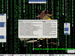

{kind=link}
$Id$
ebiff is a mail notification agent, like biff or Xbiff, for the GNU/Linux operating systems (and other posix operating systems).
ebiff is an extensible mail notification agent, it is also an enhanced biff clone.
ebiff is plugin based, so its capabilityes are only related to the plugins already written. There are two types of plugins: mailbox and notifier.
These are the mailbox plugins:
These are the notifier plugins:
Here you can see some screenshots (click on the images to enlarge):
|  | Here you can see the gtk2 and the xosd plugins. The green on-screen text is made by the xosd plugin, while the top, left and right windows are the gtk2 notification windows. While top and left are top-level windows with fixed position the window on the right is managed by the windows manager. The window in the center is the preview window associated with the secfoc mailbox. The left window shows all the mailboxes, also the empty ones, while the other windows only the full. Read the documentation for more info about the gtk2 plugin. |
ebiff is beta, not really tested, but works fine for me. Please submit bug reports and suggestions to the author.
To download the sources go
there.
If you use the debian operating system, you can add this repository
(it is for unstable i386 only):
deb http://tassi.web.cs.unibo.it/debian/ebiff ./
deb-src http://tassi.web.cs.unibo.it/debian/ebiff ./
Here you can find the manual, it is included in the binary distributions, an is generated automatically if you compile it from the sources.
The author is Enrico Tassi, contact him at this address:
|
|
$Id$ |